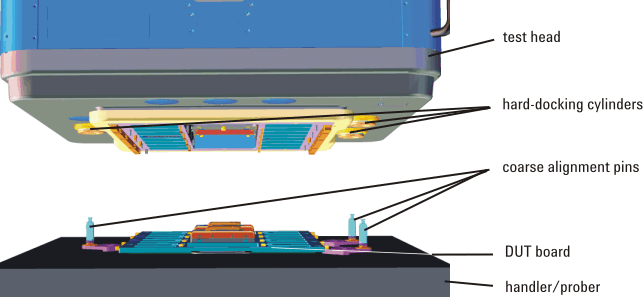
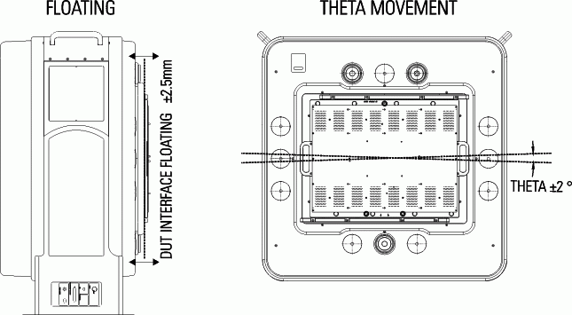

DUT board and interface alignment
Alignment pins are used to align the DUT board assembly and the DUT interface. Coarse alignment pins ensure that the DUT board assembly is in the correct orientation. They also align the DUT board assembly and the DUT interface within ± 2.5 mm to initiate DUT board docking. Fine alignment pins bring the DUT board into the final docking position.

The figure above illustrates the DUT board to DUT interface coarse alignment mechanism. Three hard-docking cylinders are installed in the test head. Three coarse alignment pins are attached to an external docking plate, handler docking plate, or prober adapter plate. When hard-docking is performed, the coarse alignment pins are inserted into the cylinders by moving the test head toward the handler or wafer prober.
The plate to which the hard docking cylinders are mounted is attached to the test head such that the plate can rotate ±1.5° around an axis perpendicular to the DUT interface (theta direction). This facilitates the insertion of the coarse alignment pins into the hard-docking cylinders.
The coarse alignment pins are attached to the handler or wafer prober in positions matching the hard-docking cylinder positions. This is accomplished using one large hard-docking plate mounted to the base plate of the handler or using three small adaptor plates mounted to the top plate of the wafer prober. The large hard-docking plate provides the required pin mounting holes for all possible cylinder positions.
The DUT interface is not attached rigidly to the test head and so has some independent movement. This independent movement of the DUT interface allows it to align with a DUT board mounted rigidly to a handler or wafer prober. As the DUT interface moves more easily than the entire test head, the forces exerted on the handler or wafer prober are significantly reduced.
The flexible suspension of the DUT interface is achieved using four individual elastomers which allow ± 2.5 mm of travel (floating) by the DUT interface toward and away from the test head (z-direction). The elastomers can also provide some compensation in cases where the DUT interface and the DUT board are not exactly parallel. Bearings allow for rotation (theta) movement of ±2° by the DUT interface about an axis through the center of and perpendicular to the DUT board. The figure below shows both the z-direction and theta movement capabilities of the DUT interface.

Some applications such as SmarTest Work Center testing may require particularly large DUT boards. You can use DUT boards which are larger than the DUT interface itself as long as no part of the DUT interface or the manipulator interferes with the plane of the DUT board. DUT boards that cover the hard-docking cylinders must provide recesses or holes for the coarse alignment pins.
Functional changes
- Introduced before SmarTest 6.3.2